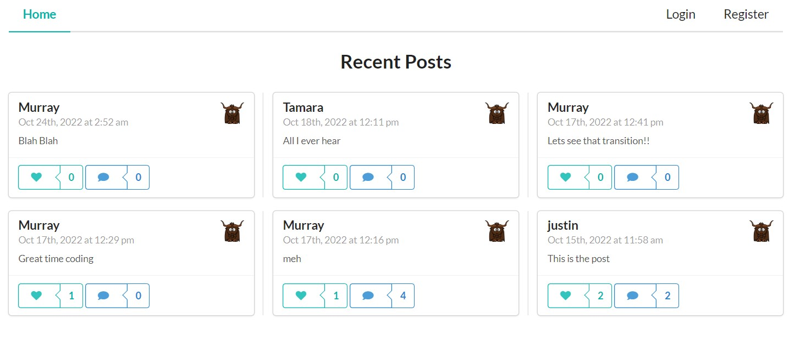

About Me
I worked in the steel industry for 10 years and previously the construction and
manufacturing industries. I have found the work both challenging and rewarding. I am always looking to
improve my knowledge and experience, either through hand-on work or study. I get the most enjoyment when
I can help develop innovations, streamline work practices and foster a collaborative and healthy
environment for my team to work in. As a former head of department, I believe the best leadership
practice is to establish a vision of what we want to achieve and curate a culture that trusts the team
to work and accomplish the tasks given while also encouraging them to operate autonomously.
SEO, Managment and Marketing
This is the first project I worked on during my bootcamp cause. In this project I learned the value of
using the correct semantic language in HTML. Having to correct this coded from generic /div/ elements
to a readable structure, helped me better understand the flow. It also showed me how the effective use
of class and ID can be to simplify a style.css file. During this project I was able to flex my google
search
muscles and find many valuable resources regarding how semantic language should be approached, not just
as
best practice but also when considering the need of user, depending on how they are access your website.
Random Videogame Selector
 This is the first group project I worked on. We worked out the idea and wireframe quite quickly. We
settled on making a random videogame selector, we would ask a series of questions to the user, once we had
narrowed the critera down, we would generate a random game for the user to play. It was over 2 weeks and this was
truly challenging. As a team of three we split the work into the landing, options and results pages. The
biggest take away I had from this project was communicating effectivly. We had issues getting together
in the first week, this lead to streamlining the the functionality of the website to meet the timeframe.
This is the first group project I worked on. We worked out the idea and wireframe quite quickly. We
settled on making a random videogame selector, we would ask a series of questions to the user, once we had
narrowed the critera down, we would generate a random game for the user to play. It was over 2 weeks and this was
truly challenging. As a team of three we split the work into the landing, options and results pages. The
biggest take away I had from this project was communicating effectivly. We had issues getting together
in the first week, this lead to streamlining the the functionality of the website to meet the timeframe.
E Commerce Art Store
 In this project we tasked ourselves with making a simple ecommerce website to display local artist work.
Where users can log in, browse through various artists and styles on display, select their favorite
pieces, add them to a cart, then check out if desired. We used Node.js and Express.js to create RESTful
API's. Our template engine was Handlebars with some boostrapping for the UI. To store the data we used
MySQL and Sequelize. For basic authentication we used express-session.
In this project we tasked ourselves with making a simple ecommerce website to display local artist work.
Where users can log in, browse through various artists and styles on display, select their favorite
pieces, add them to a cart, then check out if desired. We used Node.js and Express.js to create RESTful
API's. Our template engine was Handlebars with some boostrapping for the UI. To store the data we used
MySQL and Sequelize. For basic authentication we used express-session.
Project-3 Yik-Yak

For this project I decided to make a social media posting site. It has has a backend and a front end.
It grants users the ability to add, remove, like, and update various posts.
I used MongoDB, Express, Node, React, GraphQL, and Node. With this implementation I used a
GraphQL server that uses Node and Express to communicate to a MongoDB Database and fetch and
persist data to a social media app back-end. This was a very difficult project and it required
hours and hours of tutorials for me to complete. Aside from the general difficulty of creating
the app, maintaining syntax and naming conventions across the all the files was a painful and
caused a lot of debugging.